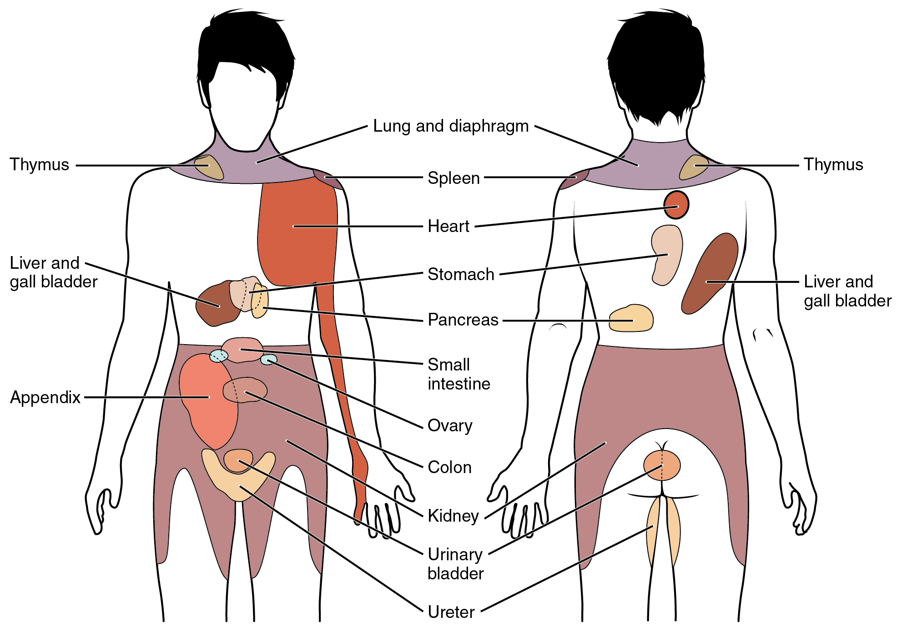
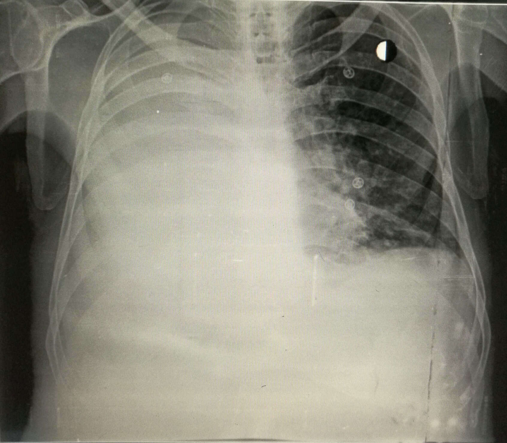
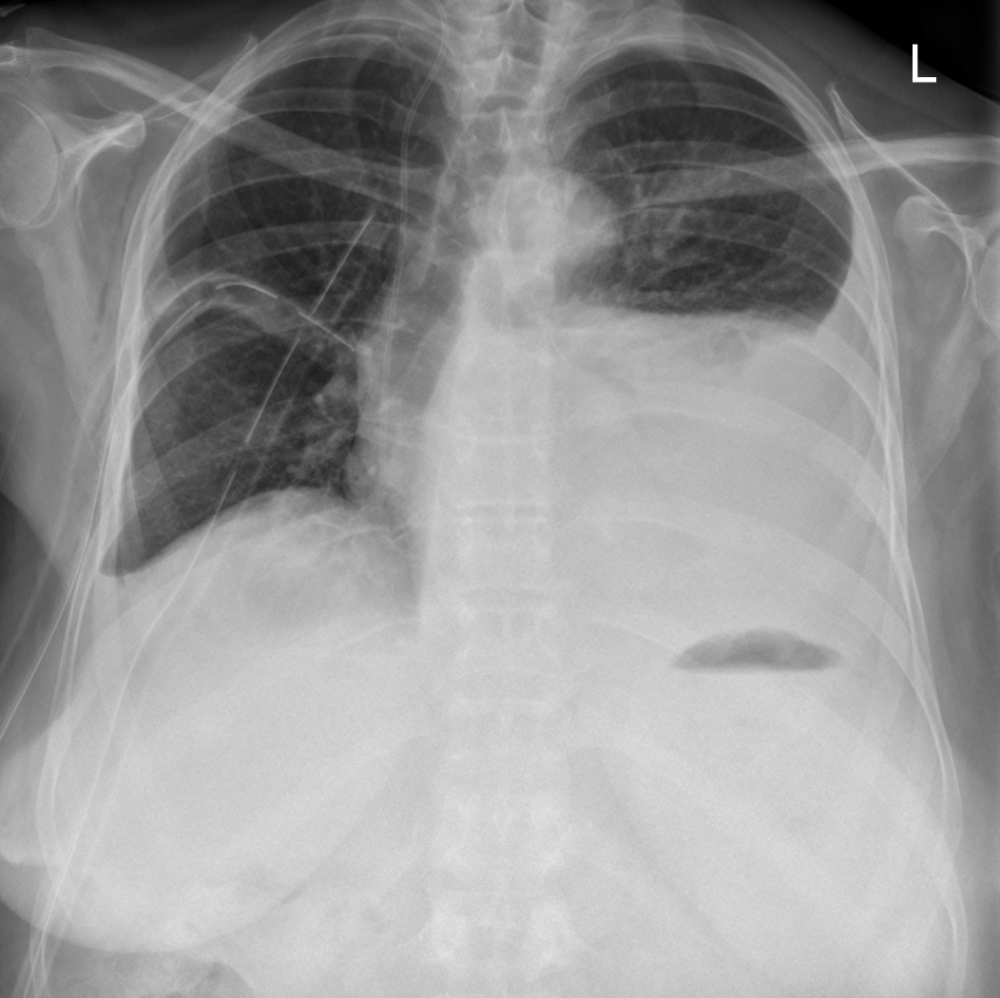
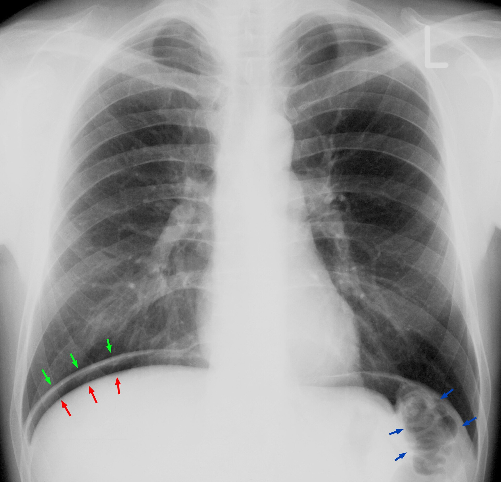

鑑別架構圖
先看骨架再看細節。這張圖回答「可能性從哪幾個分支長出來」，不是「先做什麼再做什麼」。⚠ ＝ can't-miss。
flowchart LR C(["RUQ pain<br/>右上腹痛"]) C --> TH["胸腔"] C --> HB["肝膽"] C --> CV["心血管"] C --> GI["腸胃"] C --> KU["腎泌尿"] C --> WA["體壁"] TH --> TH1["⚠ Pulmonary embolism<br/>Empyema・Pleural effusion<br/>Pneumonia・Pneumothorax"] HB --> HB1["⚠ Acute cholangitis<br/>Cholecystitis・Liver abscess<br/>Acute hepatitis"] CV --> CV1["⚠ AMI 下壁・Aortic dissection<br/>Pericarditis"] GI --> GI1["⚠ Perforated peptic ulcer<br/>PUD・高位闌尾炎"] KU --> KU1["Acute pyelonephritis<br/>Nephrolithiasis"] WA --> WA1["Herpes zoster<br/>肌肉骨骼"] classDef hub fill:#263238,stroke:#000,color:#fff,font-weight:bold classDef sys fill:#eceff1,stroke:#607d8b,color:#263238,font-weight:bold classDef leaf fill:#f5f5f5,stroke:#9e9e9e,color:#263238 class C hub class TH,HB,CV,GI,KU,WA sys class TH1,HB1,CV1,GI1,KU1,WA1 leaf
T7–T11 橫跨下胸壁與上腹壁，因此下胸腔病灶可被病人描述成上腹痛。Source: Wikimedia Commons — Dermatomes labeled, Goran tek-en（CC BY-SA 4.0）。

橫膈的痛覺傳入走膈神經 C3–5，可被投射到肩頸區；圖中紫色區即 lung and diaphragm 的典型轉移痛分布。Source: OpenStax, Figure 15.7 Referred Pain Chart（CC BY-NC-SA 4.0）。病史 History
LQQOPERA 一項不漏。RUQ 痛的關鍵是「用一個問題把橫膈膜上下分開」。
| 問題 | 若為「是」→ 想到 |
|---|---|
| 深呼吸／咳嗽會更痛嗎？（pleuritic） | 胸腔：Empyema、Pleural effusion↗、Pneumonia、Pulmonary embolism、Pneumothorax↗；或膈下刺激（subphrenic abscess、膽囊炎併腹膜炎） |
| 吃完（油膩）東西後更痛？ | Acute cholecystitis↗、CBD stone↗ |
| 痛轉移到右肩／肩胛？ | 膈神經受刺激（C3–5）：膽囊、膈下病灶 |
| 發燒＋黃疸？ | Acute cholangitis↗（Charcot 三徵） |
| 有咳嗽、有痰、會喘？ | 肺炎 → parapneumonic effusion → 膿胸 |
| 最近兩週有呼吸道感染嗎？燒退一半又燒起來？ | Parapneumonic effusion 的典型時序 |
| 解黑便、吐咖啡色物？ | 上消化道出血、Peptic ulcer disease↗ |
| 腰痛、小便痛／頻尿／血尿？ | Acute pyelonephritis↗、Nephrolithiasis↗ |
| 冒冷汗、噁心、胸悶？ | AMI |
| 體重減輕、夜間盜汗、久咳？ | Tuberculosis↗ |
一定不能漏問：TOCC、用藥史（NSAID → 潰瘍；抗凝血劑）、酒精、過去腹部手術、B/C 肝、旅遊接觸史。
理學檢查 PE
右上腹痛的 PE 重心常常不在腹部。肺部的視、觸、叩、聽四項都要做完，不能只聽診。
| 要做的 PE | 陽性代表 |
|---|---|
| 視：呼吸動作左右對稱？肋間隙？ | 患側擴張變差 → 大量積液 |
| 觸：tactile fremitus | 減弱 → 積液／氣胸；增強 → 實質化（consolidation） |
| 叩：percussion | Dullness → 積液；hyperresonance → 氣胸 |
| 聽：breath sound | 患側減弱 ± crackles → 積液／肺炎；pleural friction rub → 胸膜炎 |
| Murphy's sign | 陽性 → Acute cholecystitis↗ |
| 腹部觸診＋腸音 | 板狀腹／反彈痛 → 穿孔、腹膜炎 |
| CV angle knocking | 陽性 → Acute pyelonephritis↗ |
| 鞏膜、皮膚黃疸 | 膽道阻塞 |
第一批檢查 Initial Workup
| 時機 | 檢查 | 想回答的問題 |
|---|---|---|
| 立刻 | EKG↗ | 排除下壁 MI |
| 立刻 | Chest X-ray↗（站立位） | ① 橫膈下 free air（穿孔）② 胸水 ③ 肺炎浸潤 |
| 立刻 | CBC/DC、CRP | 感染程度 |
| 立刻 | 肝膽：AST/ALT、ALP、γ-GT、T-bil/D-bil、PT/INR | 膽道阻塞 vs 肝細胞損傷 |
| 立刻 | Amylase / lipase | 胰臟炎 |
| 立刻 | Stool occult blood↗ | 上消化道出血 |
| 立刻 | U/A | 泌尿道感染／結石 |
| 次要 | Abdominal ultrasound↗ | 膽結石、膽囊壁、膽管擴張、肝膿瘍 |
| 次要 | Pleural fluid analysis（胸腔穿刺） | 有胸水時：定性並判斷要不要引流 |

大量右側胸水：右半胸近乎完全白化，並把縱膈推向健側。Source: Wikimedia Commons — Unilateral Pleural Effusion, Sara Nabih（CC BY-SA 4.0）。
另一病例的站立正面片：左側肋膈角變鈍，液體上緣外側較高，形成典型 meniscus sign；此圖用來補足上一張大量胸水不易辨認的彎月形上緣。Source: Wikimedia Commons — 14-02-Erguss im Stehen, Hellerhoff（CC BY-SA 3.0）。
穿孔對照：站立片右膈下可見新月形游離氣體（紅／綠箭頭之間），不是胸水。Source: Wikimedia Commons — Pneumoperitoneum, Hellerhoff（CC BY-SA 3.0）。鑑別診斷
完整清單，依「致命 → 常見 → 少見但要想到」分層。頂部的 can't-miss 是這張表第一層的濃縮。
致命（can't-miss）
| 疾病 | 支持線索 | 排除方法 |
|---|---|---|
| Perforated peptic ulcer↗ | 突發劇痛、板狀腹、NSAID 史 | 站立位 CXR free air |
| AMI（下壁） | 冒冷汗、噁心、放射痛 | EKG ＋ troponin |
| Acute cholangitis↗ | Charcot 三徵 | 膽紅素、ALP、腹超 |
| Pulmonary embolism | Pleuritic 痛、喘、心搏快 | Wells → D-dimer / CTA |
| Aortic dissection | 撕裂痛、脈搏／血壓不對稱 | CXR 縱膈腔 → CTA |
常見
| 疾病 | 支持線索 | 排除方法 |
|---|---|---|
| Acute cholecystitis↗ | 油餐後痛、Murphy's sign | 腹超 |
| Empyema / parapneumonic effusion | Pleuritic 痛、近期呼吸道感染、患側 dullness ＋ breath sound 下降 | CXR → 胸腔穿刺驗胸水 |
| Pneumonia（右下葉） | 發燒、咳嗽有痰、crackles | CXR |
| Acute hepatitis↗ | 肝腫大壓痛、AST/ALT 高 | 肝功能、病毒標記 |
| Acute pyelonephritis↗ | CV angle 敲痛、pyuria | U/A、尿培養 |
| Peptic ulcer disease↗ | 上腹痛、黑便 | 糞便潛血、胃鏡 |
少見但要想到
| 疾病 | 支持線索 | 排除方法 |
|---|---|---|
| Liver abscess↗ | 高燒、肝壓痛、糖尿病史 | 腹超 / CT |
| Tuberculosis↗ 胸膜炎 | 久咳、體重減輕、盜汗、接觸史 | 胸水 ADA、抗酸染色 |
| Pneumothorax↗ | 突發喘、hyperresonance | CXR |
| Pericarditis↗ | 前傾緩解、心包摩擦音 | EKG diffuse ST elevation |
| Subphrenic abscess | 近期腹部手術／穿孔病史 | CT |
| Herpes zoster | 沿皮節分布、疹前期只有痛沒有疹 | 臨床 |
| Nephrolithiasis↗ | 絞痛、血尿 | KUB / 腹超 |
處置分流 Disposition
| 去向 | 條件 |
|---|---|
| ICU | 敗血性休克、呼吸衰竭（SpO₂ 持續下降）、Reynolds 五徵 |
| 住院 | 需引流的胸腔感染（Chest tube drainage ＋ IV 抗生素）、需緊急處置的膽道阻塞、任一 can't-miss 未排除 |
| 門診追蹤 | Vital signs 穩定、影像陰性、疼痛可控且已排除致命原因 |
禁忌與陷阱
相關連結
- Empyema — 胸腔分支中最需要主動排除的
- Pleural fluid analysis — Light's criteria、決定要不要引流
- Chest tube drainage — 處置與併發症
- 禁忌選項 — 上表已收錄